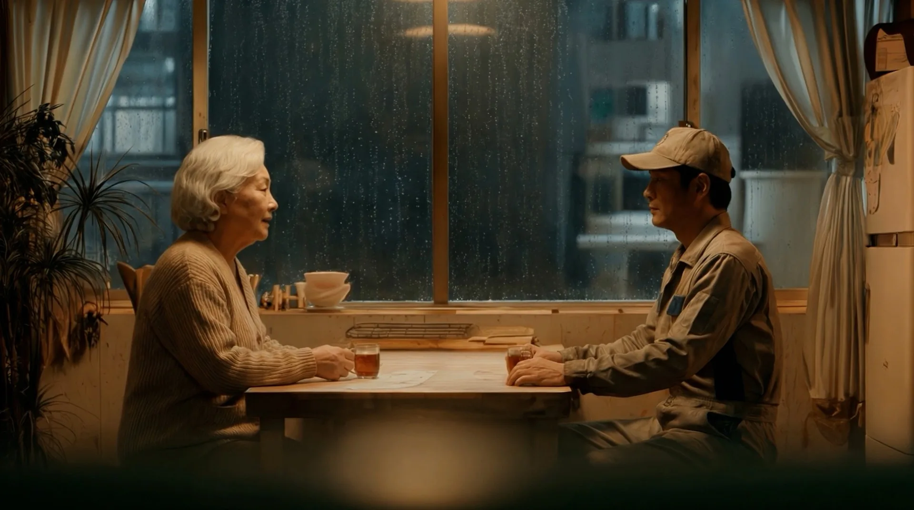
Last Delivery
AI Film Project
Building an AI Cinematic Film
2035년 서울.
마지막 인간 배송원과 첫 번째 휴머노이드의 만남.
기술이 일상이 된 미래를 배경으로, 인간과 AI의 공존,
그리고 새로운 관계의 시작을 시네마틱한 비주얼로 풀어냈습니다.Set in Seoul in 2035, Last Delivery tells the story of the last human delivery worker and the first humanoid delivery robot. In a future where technology is woven into everyday life, the film explores how humans and AI learn to coexist, and the new relationship that begins between them.
이야기는 어디에서 시작될까?Where Does the Story Begin?
이야기의 시작은 하나의 장면이 아니라 세계를 만드는 과정에 있습니다.
2035년 서울이라는 미래 도시를 설계하고, 그 안에서 살아가는 인물과 오브젝트를 구축한 뒤 AI 파이프라인을 통해 하나의 영화로 완성했습니다.Every story begins with a world, not just a scene.
We designed a future Seoul in 2035, developed its characters and objects,
and brought it all to life through an AI production pipeline.
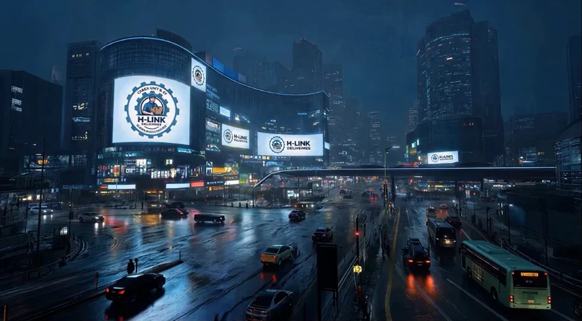
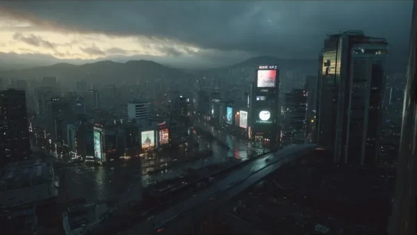
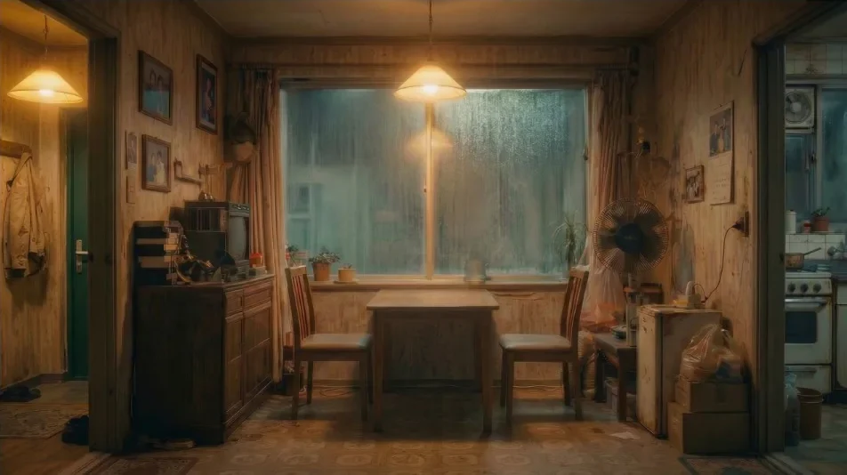
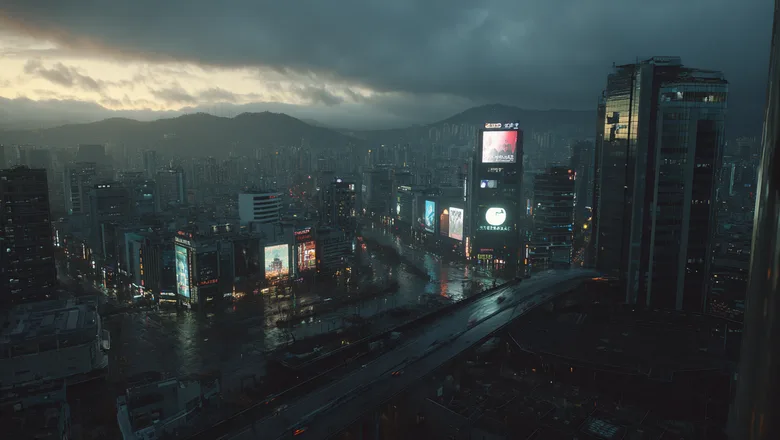
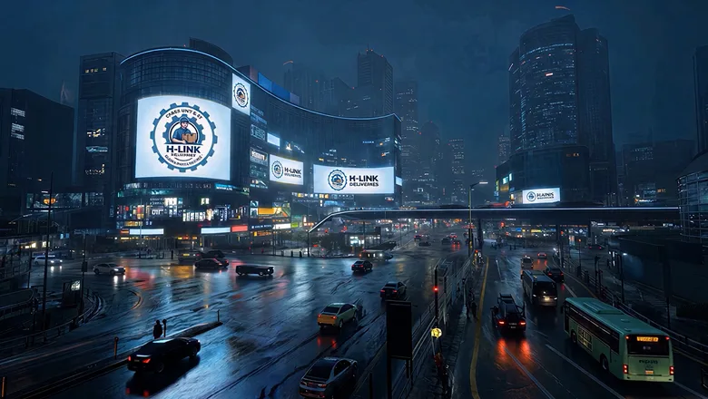
01Landscape
2035년 서울을 배경으로 현실과 미래가 자연스럽게 공존하는 도시를 구현했습니다. 건축 구조와 공간의 분위기, 조명과 디테일까지 설계하여 이야기의 흐름을 뒷받침하는 세계관을 완성했습니다.We envisioned Seoul in 2035 as a city where the familiar and the futuristic exist side by side. From architecture and lighting to the mood of each location, every detail was crafted to serve the story and make the world feel real.
02Characters
03Elements
04Pipeline
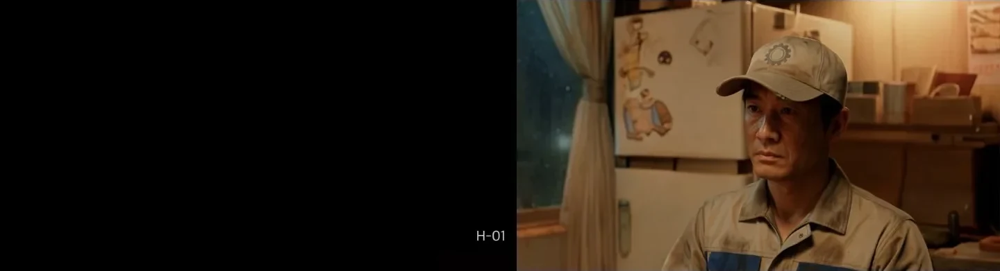
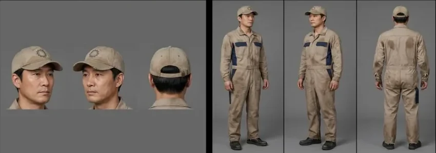
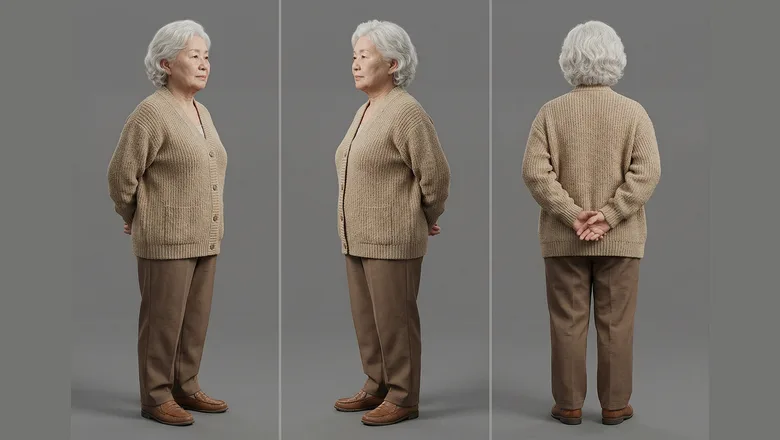
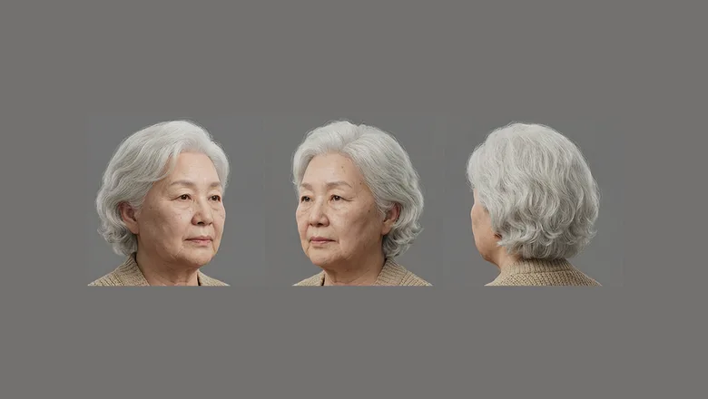
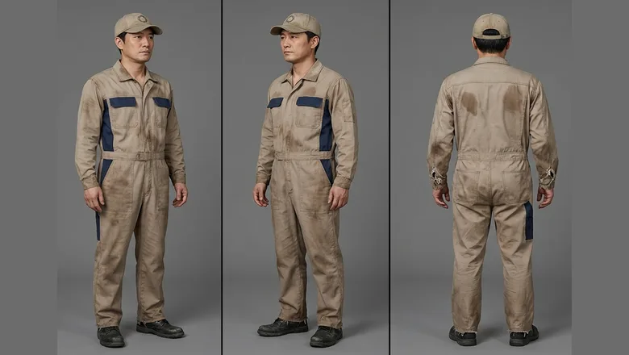
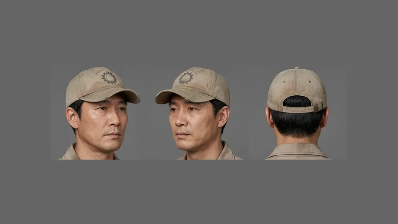
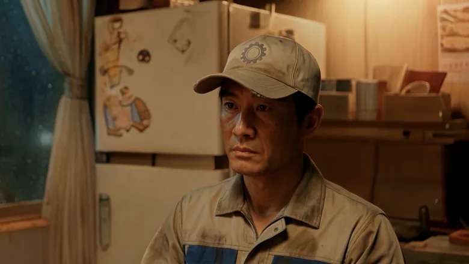
01Landscape
02Characters
영화의 중심이 되는 마지막 인간 배송원 순자와 최초의 휴머노이드 배송원 H-01을 디자인했습니다. 각 캐릭터의 역할과 개성을 반영한 외형과 스타일을 구축하여, 서로 다른 존재가 만들어내는 관계와 감정이 자연스럽게 전달될 수 있도록 표현했습니다.We brought to life Soonja, the last human delivery worker, and H-01, the first humanoid delivery robot. Each character’s look reflects who they are, and the contrast between them sets the stage for their unlikely bond.
03Elements
04Pipeline
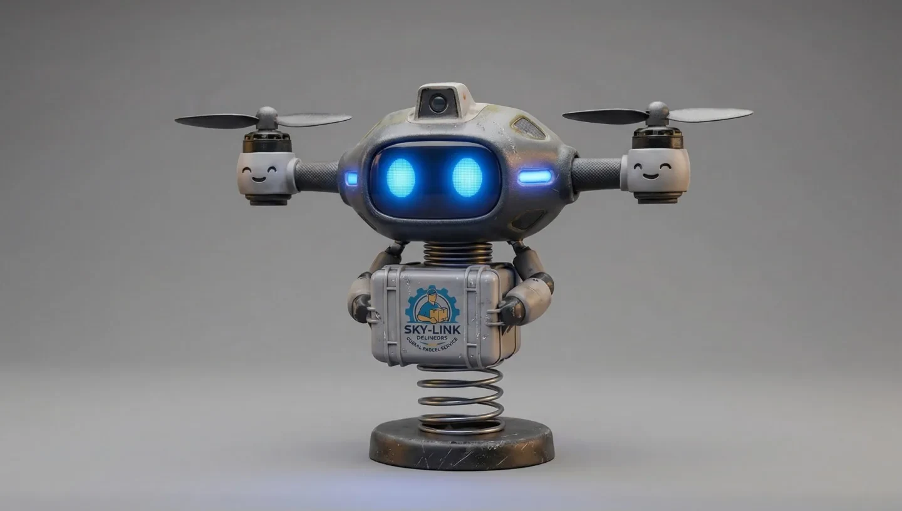
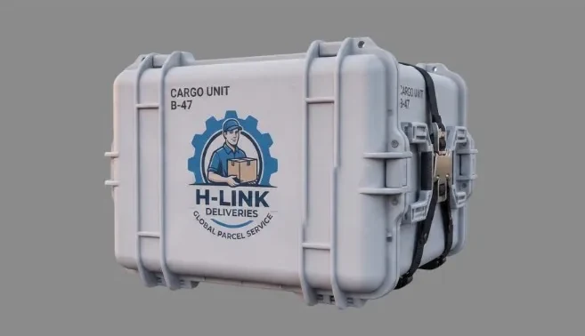
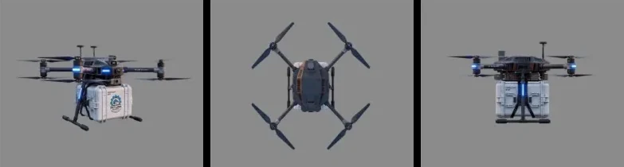
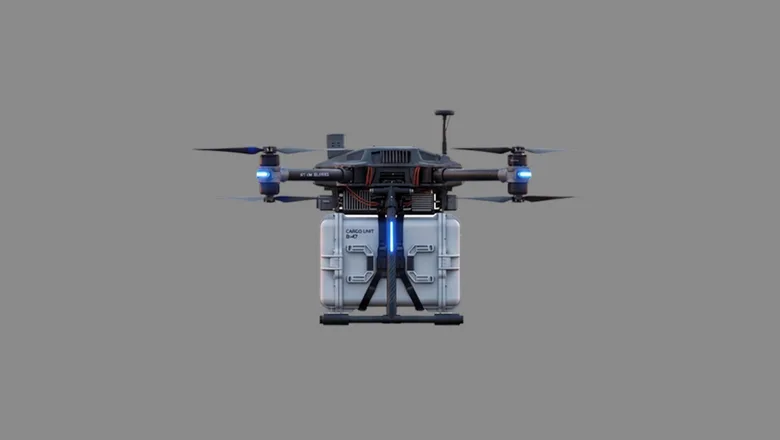
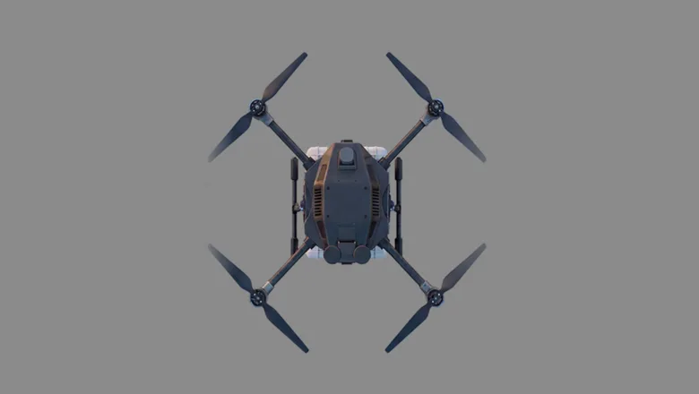
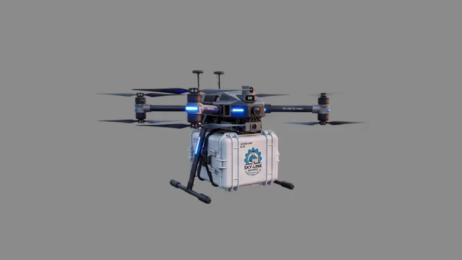
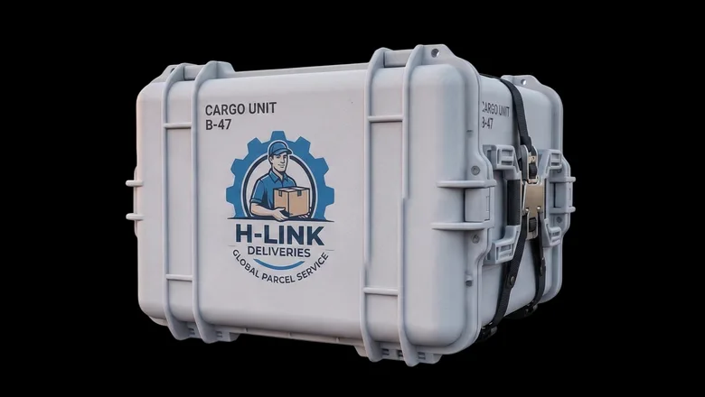
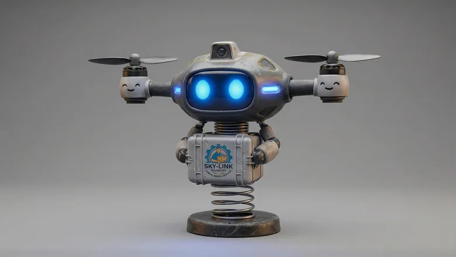
01Landscape
02Characters
03Elements
미래 도시를 구성하는 드론, 배송 로봇, 물류 장비 등 다양한 오브젝트를 제작했습니다. 각 요소는 세계관과 조화를 이루도록 설계하여 영화의 분위기와 공간에 자연스럽게 녹아들 수 있도록 구성했습니다.To populate the city, we built a range of objects, from drones and delivery robots to logistics equipment. Each one blends naturally into its surroundings, sharing a unified design language across the film.
04Pipeline
Kling
Seedance
HailuoAI
ElevenLabs
Suno
Premiere
01Landscape
02Characters
03Elements
04Pipeline
기획부터 이미지 생성, 모델링, 영상 제작, 편집까지 각 단계에 적합한 AI 도구를 활용하여 제작 과정을 구성했습니다. 다양한 AI 툴을 유기적으로 연결해 효율적인 제작 파이프라인을 구축하고 하나의 시네마틱 결과물로 완성했습니다.We used AI tools at every stage of production, from concept development and image generation to modeling, video, and editing. Connecting them into a single, structured workflow allowed us to take the film from first idea to final cut.
From Concept to Sequence
제작한 모든 요소를 하나의 이야기로 연결하여 영화의 주요 장면을
완성했습니다.Characters, environments, and objects came together in the film’s key sequences,
with each scene flowing seamlessly into the next.
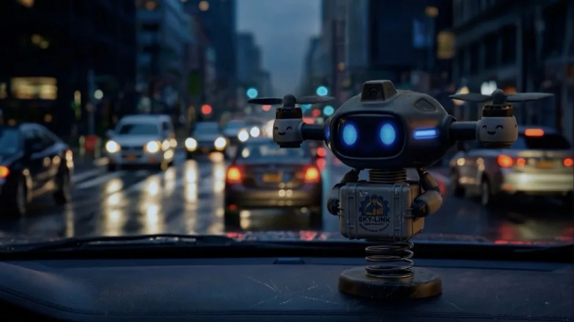
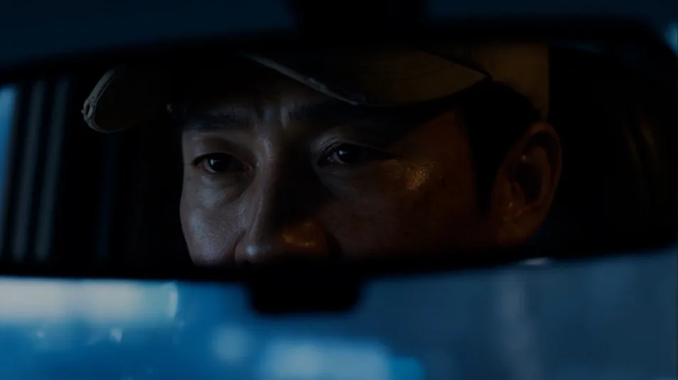
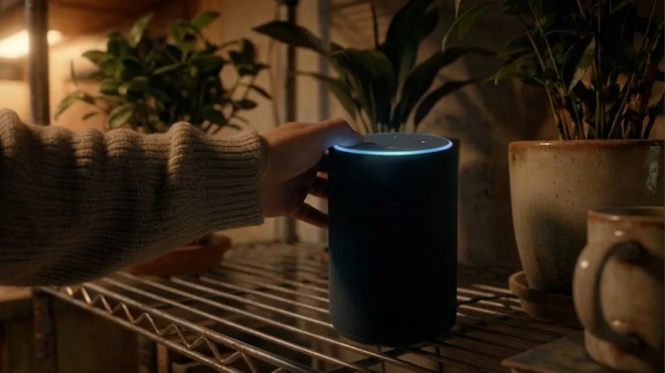
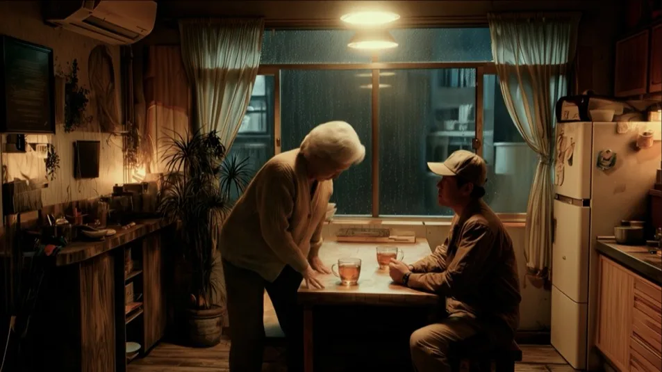
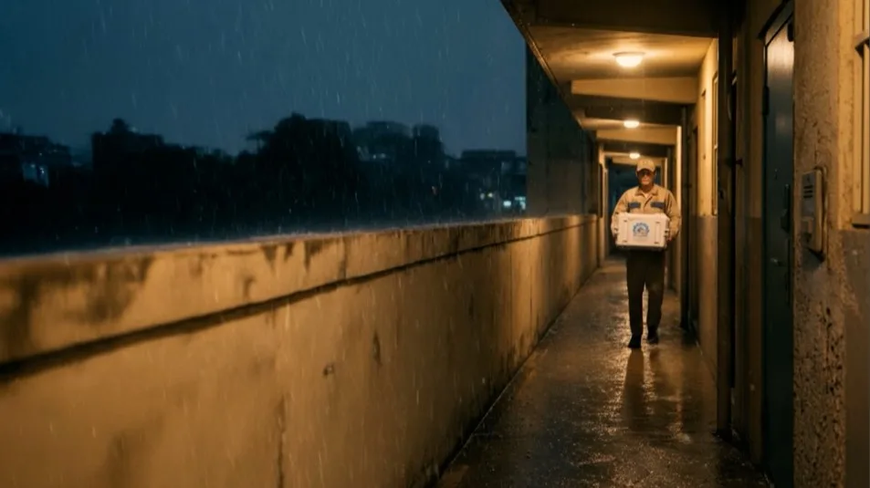